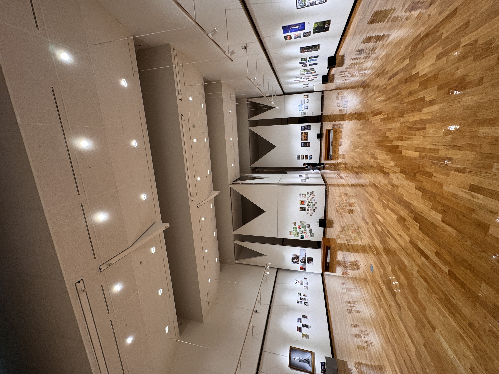
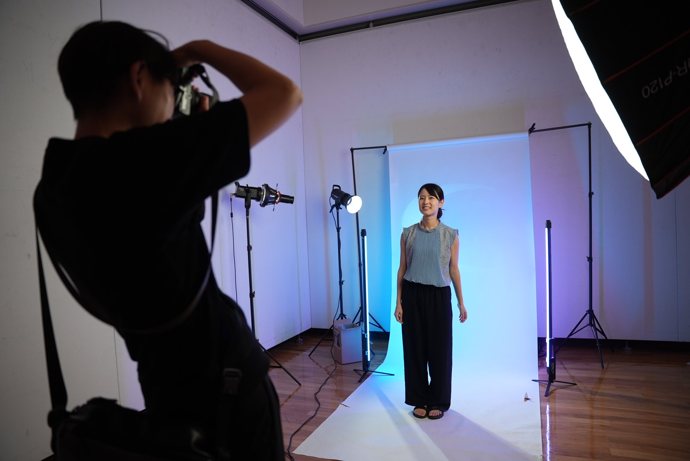
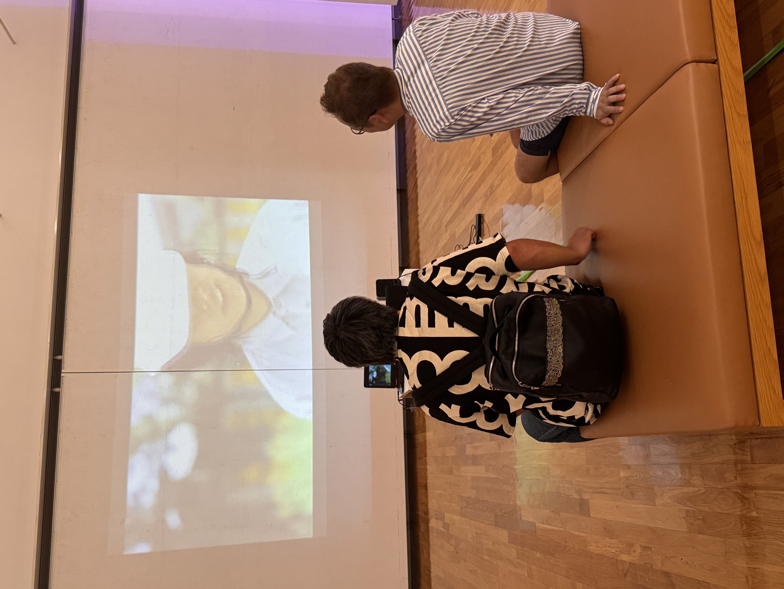
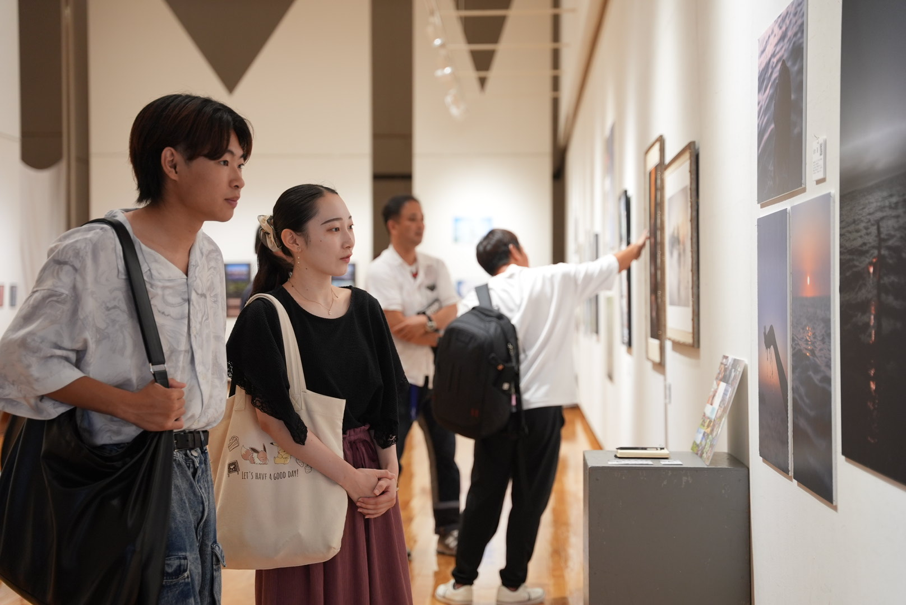
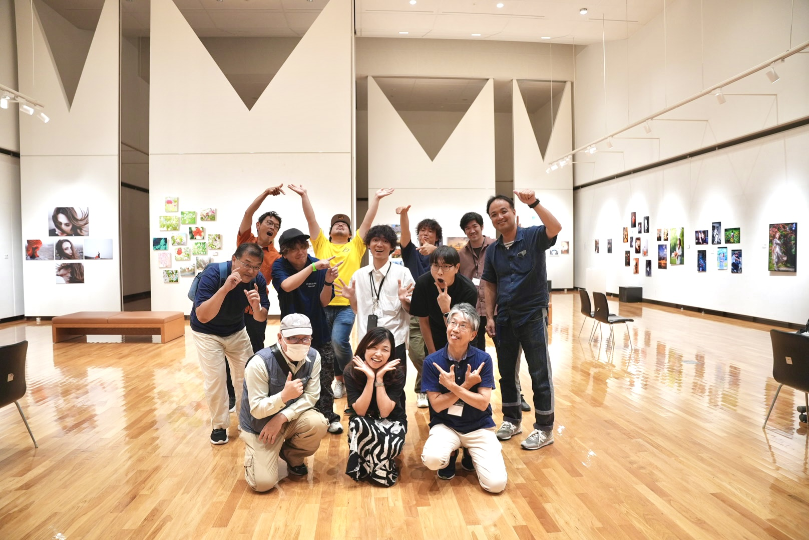
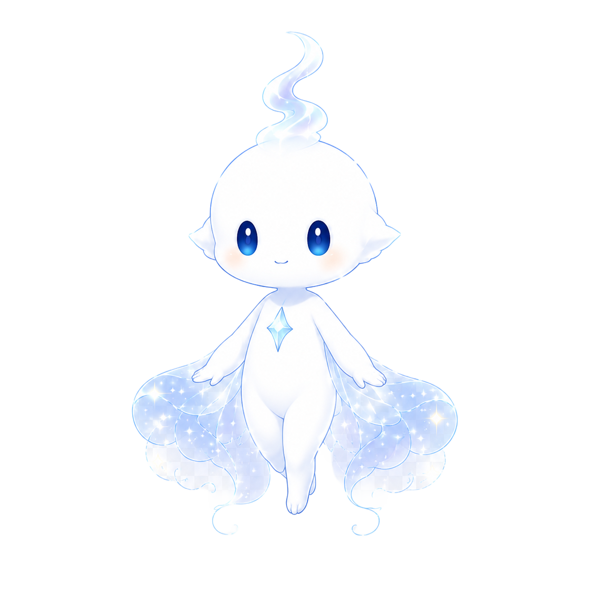

それぞれの、光。
「lumina」は、光をテーマにした写真展ではありません。
創作する一人ひとりが内に持つ、その人だけの光のこと。ジャンルも、表現も、見つめる先も違う。それでも同じ場所に集まったとき、小さな光は寄り集まり、ひとつの大きな光になる。
——これは、その瞬間を見にくる展示です。

feeling という問い。
feeling は、Creative YOLO が続けてきた写真・映像展シリーズに通底するテーマ。「私たちは何を感じ、何を撮るのか」。
その問いに、毎年ちがう光で答えていく。lumina は、その三度目。前回「feeling」から、表現はさらに広がります。
写真と映像が、集まる。
熊本県立美術館 分館の空間に、創作者それぞれの「光」が並びます。写真、映像、そしてジャンルにとらわれない表現も。
一枚ずつは小さな光でも、会場全体でひとつの大きな光景になる。

あなたの光も、この場所へ。
ポートレート、風景、スナップ、映像——ジャンルは問いません。
lumina は、創作する一人ひとりが内に持つ光を集める展示です。出展希望の方は、応募フォームからご応募ください。
※ 本展示はCreative YOLO Discordコミュニティへの参加が出展条件となります。
出展に応募する →
集まりはじめた、光。
熊本を拠点に活動する創作者たちが、それぞれの視点で「光」を持ち寄ります。
出展者は、順次公開予定です。

あなたも、光のひとつになる。
会場には、来場者が参加できる小さな仕掛けを用意しています。スマートフォンからの参加で、会場の光がすこしずつ灯っていく——。
くわしくは、会期が近づいたら公開します。
- Date
- 2026年10月13日(火)〜10月18日(日)
- Venue
- 熊本県立美術館 分館
- Entry
- 入場料 無料
- Host
- Creative YOLO夢を追うすべての"今"をカタチに。
小さな案内人。
ルミナは、写真に宿る"光"を集める小さな案内人。
人の心が動いた瞬間に生まれる光を見つけながら、
会場のどこかをふわふわと漂っています。
